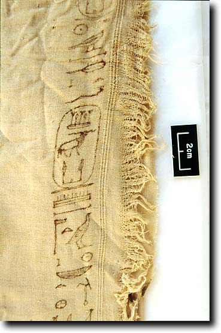
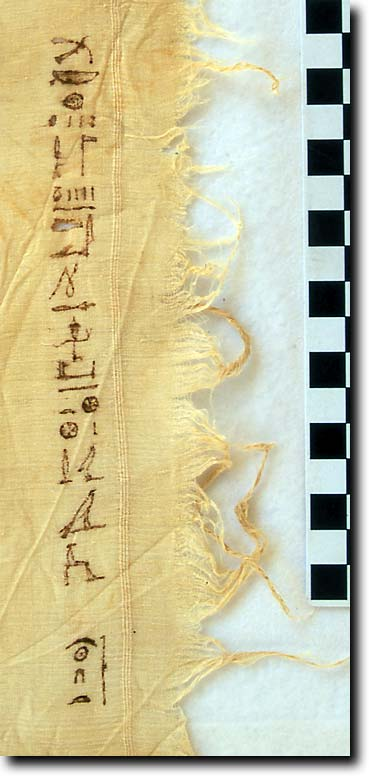
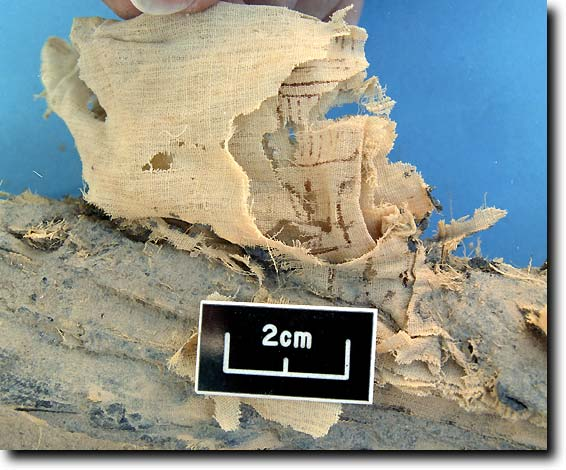
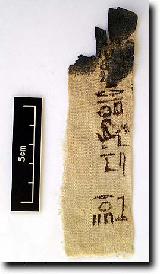

|
Masses of linen, made of flax, were used to wrap mummies from the Old Kingdom onwards, and fragments of linen form a major element of finds in tombs such as TT99. However, in reading many archaeological reports, you would be forgiven for not realising that this sort of material was actually found, since it is rarely mentioned unless spectacular or inscribed.
The vast majority of the material from TT99 is plain and undecorated, but some bears woven patterns, while others are written on in ink.
Inscribed textiles
In TT99 some fragments of linen have been found which help with dating the reuse of the tomb. Several fragments with titularies of Shabaka have been found (first tab below), in association with one which bears a date of year 10 and the titles of Wedjahor (second tab). One was found on a mummy which we think is Wedjahor (third tab). Another bears a date of year 12 and the name of Horempe (fourth tab), but with no association with a king's name. There are also several which bear presently unclear texts.
- Shabaka example
- Wedjahor linen
- On mummy of Wedjahor
- Horempe linen
Piece of linen bearing part of the titulary of
king Shabaka (99.97.0523) |
 |
Piece of linen bearing the name of Wedjahor
and a date of year 10 (99.94.0764) |
 |
Fragment of Shabaka linen (99.94.0801b) from the mummy
believed to be that of Wedjahor |
 |
A piece of linen bearing the name of
Horempe and a date of year 12 (99.95.0275) |
 |
|
Decorated textiles
Other fragments bear various patterns, of which two pieces are shown below (tab Example 1, 99.95.0760 and 99.95.0711). It seems likely that this decorated linen was not specially made for the burial (there is not enough of it), but was rather material used in life which was then torn up and used for special parts of the burial. There is some uncertainty as to its date at present, although it is believed to be most likely of the Thirs Intermediate Period.
Example 2 below shows a fragment (99.95.0512) which is not decorated but rather repaired. Such evidence also points to reuse of domestic textiles.
A Gallery Page of the other decorated textiles is available
|